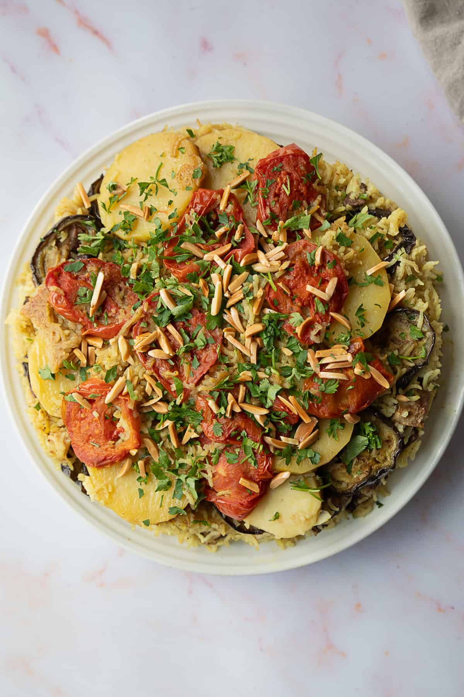

Maklouba

Ingredients:
- 2 cups rice (washed and soaked 30 min)
- 1 medium eggplant (sliced)
- 2 medium potatoes (sliced)
- 1 medium cauliflower (optional, cut into florets)
- 1 onion (chopped)
- 500g chicken or beef
- 4 cups water
- 2 tsp salt
- 1 tsp allspice
- ½ tsp cinnamon
- ½ tsp black pepper
- 2 tbsp vegetable oil
Preparation👨🍳:
- Fry the eggplant, potatoes, and cauliflower until golden. Set aside.
- In a pot, heat oil and sauté onions until soft.
- Add meat, spices, and salt. Cook until browned.
- Add water and boil until meat is cooked. Remove meat and reserve broth.
- In a large pot, layer: meat → vegetables → rice.
- Pour the hot broth over until just covering the rice. Adjust salt if needed.
- Cover and cook on low for 35–45 minutes until rice is done.
- Flip the pot onto a large tray and serve with yogurt or salad.